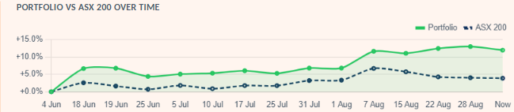
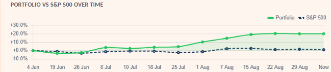

Undervalued Stocks: 3-Month Report Card — Our First 90 Days, ASX 200 & S&P 500
A note on authorship: The research, analysis, and opinions in this article are the author's own. Claude (Anthropic's AI) assisted with drafting and editing the prose.


The two charts have a different shape. The ASX portfolio built its lead gradually and has tracked roughly 8–12 points above the index since early August. The S&P 500 portfolio spent its first six weeks roughly flat-to-behind the index, then broke away sharply from late July — most of its entire 90-day lead was made in about five weeks, not smoothly across all twelve.
What this article covers:
- The real, unedited 90-day return of our ASX 200 and S&P 500 "most undervalued" screens vs. their index
- How weekly rebalancing actually works, and how much the list turns over
- The single best and worst stock pick on each screen, and the names that have stuck around the longest
- What a hypothetical 0.5% active-manager fee would have cost, and what's left after it
- Why this is Report Card #1, not a one-off — and what to expect from #2 in three months
Our Most Undervalued ASX 300 and Most Undervalued S&P 500 screens have now been running publicly, unedited, for three months. Every week they mechanically re-rank each market by DCF or DDM margin of safety and publish the top 20 — no manual curation, no discretionary overrides, no quietly dropping the ones that went badly. That makes them one of the few things on this site with an actual, checkable track record instead of a backtest.
This is that check. We pulled the real weekly snapshots — rankings, exits, and the running paper-portfolio value each screen has tracked since its own launch — and report exactly what they say, good and bad. ASX rankings went live first, on 2 June 2026; S&P 500's rankings and both markets' $10,000 paper portfolios started together two days later, on 4 June, once there was a stable first snapshot to seed a starting value from. That two-day gap is the reason you'll see both "2 June" and "4 June" cited accurately at different points below — 2 June for how long a stock has been flagged, 4 June for the portfolio-value numbers. NIFTY 500 also crossed 90 days this week, and our other three screens (KOSPI, Nikkei, Europe) haven't yet.
How the screens actually work
Each week, every stock in the ASX 300 or S&P 500 gets run through the same DCF valuation engine (or a DDM for banks/insurers) that powers the live tool. Whatever ranks in the top 20 by margin of safety — capped at 80% to filter out data errors that would otherwise look implausibly cheap — gets published. A hypothetical $10,000 is split equally across those 20 names the first week; every week after, any name that drops out of the top 20 is "sold" at that week's price and replaced by whichever new name qualifies, with the freed-up capital reinvested equally across the current list — the full mechanics (why equal weight, why a stock's exit price is what it is, how dividends get credited) are in The $10,000 Paper Portfolio.
Two different "ASX" numbers show up in this article, deliberately: the screen evaluates the ASX 300 (Australia's 300 largest listed companies, the actual stock-picking universe) each week, but we benchmark the resulting portfolio against the ASX 200 (^AXJO) — the narrower, more widely tracked index most readers actually recognize as "the market." "ASX 200 screen" elsewhere in this article refers to that benchmark comparison, not a claim that only 200 stocks were eligible to be picked.
There's no judgment call anywhere in that loop — a stock's margin of safety this week is a number, and the number decides if it's still on the list. That's the whole point of tracking it: the model's picks are checkable against reality, not just a plausible-sounding story.
The headline numbers
| Metric | ASX 200 screen | S&P 500 screen |
|---|---|---|
| Window | 4 Jun – 28 Aug 2026 (85 days) | 4 Jun – 29 Aug 2026 (86 days) |
| Starting value | $10,000 | $10,000 |
| Ending value | $11,303.50 | $12,013.51 |
| Portfolio return | +13.0% | +20.1% |
| Index return (ASX 200 / S&P 500) | +4.1% | +1.7% |
| Return vs. index (alpha) | +9.0 pp | +18.5 pp |
| Dividends collected along the way | ≈$115 | ≈$12 |
| Distinct list appearances (stints) | 60 (40 exited, 20 held) | 86 (66 exited, 20 held) |
Both screens beat their index over the window, and by a wide margin. Read that as one 90-day data point, not proof of a repeatable edge — a single quarter is nowhere near enough to separate genuine model skill from having launched into a period where cheap, unloved stocks happened to do well. We're publishing this precisely so that claim can be checked again next quarter, and the one after that, rather than taken on faith.
Check any single stock the same way Run the same DCF/DDM engine on any ticker → Combined Stock EvaluationRebalancing: how much turnover is actually happening
"Undervalued" is not a label a stock keeps once it's earned it — it's recalculated fresh every week from that week's price and financials, so a name can qualify one Saturday and be gone the next simply because the price moved or the fundamentals updated. Over 12 weekly refreshes, the ASX screen has cycled through 60 distinct list appearances across a 20-slot list — on average, close to a third of the list turns over every single week. The S&P 500 screen churns even faster: 86 appearances, meaning more than a third of its 20 names change most weeks.
Some names cycle in and out repeatedly rather than leaving for good — ASX MGH.AX and BGA.AX have each been added and removed from the ASX list three times since June, and S&P 500 ADBE has cycled through the S&P 500 list three times too — its first stint (4–19 June) was actually the screen's second-worst pick of the entire quarter (see below), and its next two stints were both solidly positive. Same stock, same model, three different verdicts three months apart — which is really the honest way to read a screen like this: a snapshot of this week's numbers, not a standing opinion about the company.
Best and worst picks
Across every stock that has appeared on either list — whether it has since been sold or is still sitting in the current top 20 — here's what actually happened, ranked by return from the week it was first flagged undervalued to the week it left (or to now, if it's still on the list).
ASX 200 screen
| Ticker | Held | Return |
|---|---|---|
| VAU.AX | 2 Jun → 7 Aug (66 days) | +32.7% |
| SDF.AX | 2 Jun → 18 Jun (16 days) | +29.0% |
| NEM.AX | 7 Aug → 28 Aug (21 days) | +19.6% |
| FMG.AX | 2 Jun → 22 Aug (81 days) | −20.5% |
| WOR.AX | 18 Jun → 28 Aug (71 days) | −19.5% |
S&P 500 screen
| Ticker | Held | Return |
|---|---|---|
| SNDK | 7 Aug → 15 Aug (8 days) | +35.4% |
| CTSH | 8 Jul → 1 Aug (24 days) | +26.0% |
| REGN | 18 Jul → 22 Aug (35 days) | +23.3% |
| ADBE | 4 Jun → 19 Jun (15 days) | −23.8% |
| FOXA | 4 Jun → 19 Jun (15 days) | −18.7% |
The S&P 500 screen's worst week was its first one. ADBE, FOXA, FOX, and ADSK were all part of the original 4 June cohort, and all four were cut two weeks later at double-digit losses — the screen's roughest patch by far, right at launch, before it went on its strongest run of the quarter. A screen judged only on its first fortnight would have looked broken; three months in, it doesn't.
The names that have stuck around the longest
Five ASX stocks have been flagged undervalued continuously since the screen's very first published list — the longest a name can possibly have stayed, given the screen is only 90 days old:
ASX 200 screen
| Ticker | Company | Status | Return since 2 Jun |
|---|---|---|---|
| LOV.AX still held | Lovisa Holdings Limited | On list 87 days | +17.2% |
| TAH.AX | Tabcorp Holdings Limited | Exited 28 Aug | +13.6% |
| PRN.AX | Perenti Limited | Exited 28 Aug | +10.1% |
| SRG.AX still held | SRG Global Limited | On list 87 days | +2.5% |
| QUB.AX still held | Qube Holdings Limited | On list 87 days | +2.0% |
No S&P 500 stock has managed the equivalent — its longest single stay is 64 days, reached by two names:
S&P 500 screen
| Ticker | Company | Status | Return |
|---|---|---|---|
| J | Jacobs Solutions Inc. | Exited 7 Aug (64 days) | +19.6% |
| BF-B | Brown-Forman Corporation | Exited 22 Aug (64 days) | +6.8% |
That gap (87 days vs. 64) is the same story as the turnover numbers above, from a different angle: the S&P 500 screen's valuation gaps close faster than the ASX screen's do, on this one sample.
What a real fund's fee would have cost
None of this is a managed product — KashVector doesn't hold client money or charge anyone a fee. But it's a fair question: if a traditional active fund manager ran this exact mechanical strategy and charged a typical 0.5% p.a. management fee, what would an investor actually have kept? 0.5% is an annual rate, so for a ~90-day window it's pro-rated down to roughly a ninth of that — not $50 on $10,000, closer to $12.
Net value = Ending value − Pro-rated fee
Net return = (Net value − Starting value) / Starting value
| Metric | ASX 200 screen | S&P 500 screen |
|---|---|---|
| Gross ending value | $11,303.50 | $12,013.51 |
| 0.5% p.a. fee, pro-rated for 85/86 days | −$11.64 | −$11.78 |
| Net ending value | $11,291.86 | $12,001.73 |
| Gross return | +13.0% | +20.1% |
| Net return, after fee | +12.9% | +20.0% |
| Net return vs. index | +8.9 pp | +18.3 pp |
At a realistic annual rate, a 0.5% fee barely dents a quarter like this one — about a tenth of a percentage point off the headline return either way. That's the honest number for the fee itself, but it's not the honest number for total cost: it still ignores entry/exit spreads, brokerage, and tax on the 60–86 rebalancing trades this quarter alone generated. A real fund replicating this exact turnover would carry meaningfully higher costs than the management fee alone suggests — the fee is the smallest line item here, not the whole story.
What this isn't
- Not a real fund. No money is actually invested; this is a hypothetical, equally-weighted $10,000 tracked on paper against real market prices.
- Not a recommendation. Every number here is the mechanical output of a DCF/DDM model reacting to price and financials — not a judgment on any company's management, news, or prospects.
- Not a long enough track record to prove anything yet. 90 days is one market cycle. Report Card #2 lands in three months whether the numbers are better, worse, or the alpha disappears entirely — this is the first entry in a running log, not a final verdict.
- Not free of real-world friction. Real trading has spreads, brokerage, and tax that this simplified model doesn't fully capture — see the fee section above.
This is Report Card #1, not a one-off. The screens themselves don't stop — they keep re-ranking every week regardless of whether anyone's writing about them. We're committing to pulling these same numbers again every three months and publishing the next report card alongside this one, so the track record compounds instead of resetting. If the next report's numbers are worse — or the alpha evaporates entirely — that report gets published too, on the same page series, not quietly dropped. A single good quarter proves very little on its own; a running quarterly log that includes the bad quarters is the actual point.
See this week's actual list The current top 20, updated weekly → Most Undervalued S&P 500Why only these two markets
We run six of these screens, and NIFTY 500 crossed the same 90-day mark this week too — its portfolio tracking started 5 June 2026, a day after ASX and S&P 500. It's still not in this article. Two different reasons rule out the other four screens, and they're not the same reason:
| Market | Screen age (as of 3 Sep) | Qualified this week |
|---|---|---|
| S&P 500 | 91 days | 66 of 20 needed |
| ASX 300 | 91 days | 22 of 20 needed |
| NIFTY 500 | 90 days | 14 of 20 needed |
| KOSPI 200 | 47 days | 10 of 20 needed |
| Nikkei 225 | 46 days | 14 of 20 needed |
| Europe 200 | 31 days | 17 of 20 needed |
KOSPI, Nikkei, and Europe are simply too young — they launched later (18 July, 19 July, and 3 August 2026 respectively) and haven't reached 90 days of history at all yet. That's a timing gap, not a data problem, and it closes on its own as the weeks pass.
NIFTY is the more interesting case, because time isn't the excuse. It's exactly as old as ASX and S&P 500, and it still qualifies only 14 stocks — same structural shortfall as the three younger screens, just for a market old enough that "give it more time" doesn't explain it. Every screen caps a stock's margin of safety at 80% before it can qualify (cheaper than that is treated as a probable data error, not a real bargain); once that filter runs, NIFTY — like KOSPI, Nikkei, and Europe — has never actually held a full 20-stock portfolio. That's a real, current read on how richly those four markets are priced relative to what our DCF/DDM models expect, not a screen malfunction. It's also exactly why we're not including a NIFTY portfolio-return number here: with only 14 of 20 slots ever filled, "$10,000 split across 20 names" was never literally true for it, so its return isn't comparable to ASX's and S&P 500's on the same basis. A 500-stock universe having only 14 stocks that clear an 80%-capped DCF discount is itself a real, if less headline-friendly, result.
Sources and methodology
Data: Each screen's own weekly rankings.json, sold.json, first-seen.json, and portfolio-history.json snapshots, generated automatically on every admin-console refresh since each screen's own launch (ASX 2 June 2026, S&P 500 4 June 2026) and pulled directly for this article on 3 September 2026 — the same files that drive the live charts and the "still held" list on each screen page.
Portfolio construction: $10,000 split equally across 20 names on the first snapshot; on each subsequent weekly refresh, any name dropping out of the qualifying top 20 is marked "sold" at that week's price and the proceeds are reinvested equally across the then-current 20-name list. Dividends are added to the running portfolio value as received.
Best/worst/longest-tenure rankings include every stock that has appeared on either list, whether already exited or still currently held — for a currently-held stock, "return" is its unrealized gain from first-flagged price to the latest snapshot price, not a locked-in profit.